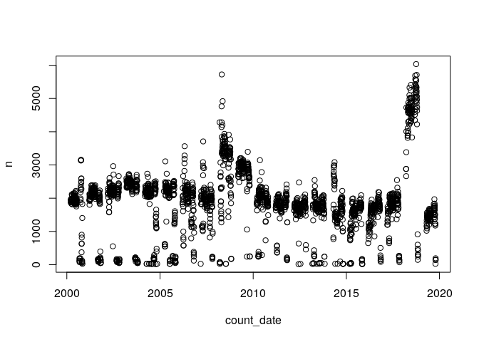
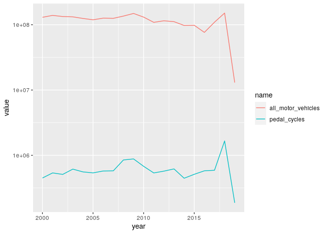
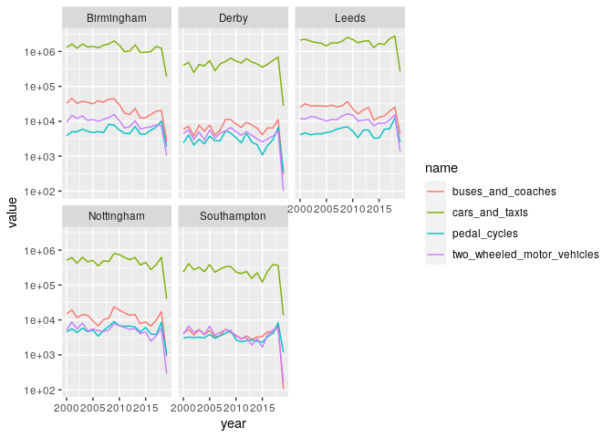
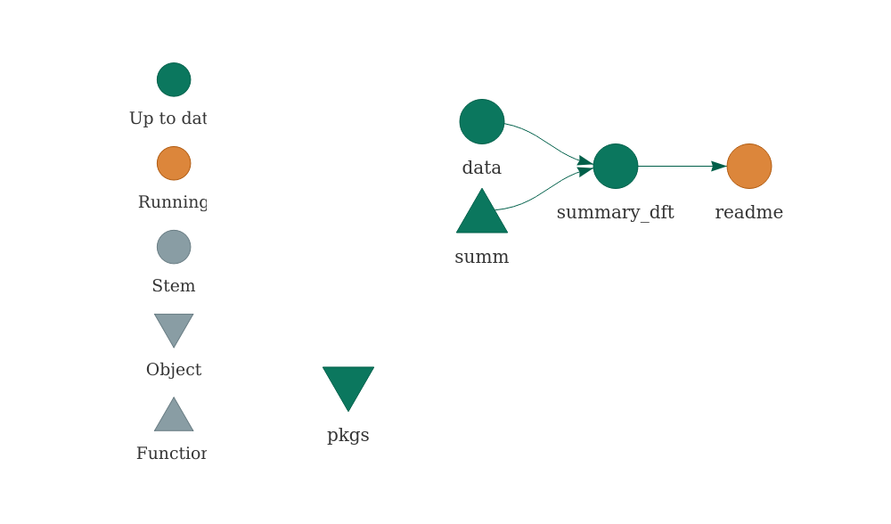

The goal of dftTrafficCounts is to provide easy access to datasets provided by UK Department for Transport (DfT) on their roadtraffic.dft.gov.uk website. See the Metadata document for details.
Installation
# install.packages("devtools") devtools::install_github("itsleeds/dftTrafficCounts")
Load the package as follows:
library(dftTrafficCounts)
Getting traffic count data
You can read-in the data for a single counter point as follows:
d_counter = dtc_import() #> Rows: 20 #> Columns: 31 #> Delimiter: "," #> chr [ 8]: region_name, local_authority_name, road_name, road_type, start_junction_road_nam... #> dbl [23]: count_point_id, year, region_id, local_authority_id, easting, northing, latitude... #> #> Use `spec()` to retrieve the guessed column specification #> Pass a specification to the `col_types` argument to quiet this message names(d_counter) #> [1] "count_point_id" "year" #> [3] "region_id" "region_name" #> [5] "local_authority_id" "local_authority_name" #> [7] "road_name" "road_type" #> [9] "start_junction_road_name" "end_junction_road_name" #> [11] "easting" "northing" #> [13] "latitude" "longitude" #> [15] "link_length_km" "link_length_miles" #> [17] "estimation_method" "estimation_method_detailed" #> [19] "pedal_cycles" "two_wheeled_motor_vehicles" #> [21] "cars_and_taxis" "buses_and_coaches" #> [23] "lgvs" "hgvs_2_rigid_axle" #> [25] "hgvs_3_rigid_axle" "hgvs_3_or_4_articulated_axle" #> [27] "hgvs_4_or_more_rigid_axle" "hgvs_5_articulated_axle" #> [29] "hgvs_6_articulated_axle" "all_hgvs" #> [31] "all_motor_vehicles" head(d_counter) #> # A tibble: 6 x 31 #> count_point_id year region_id region_name local_authority… local_authority… #> <dbl> <dbl> <dbl> <chr> <dbl> <chr> #> 1 74816 2019 8 Yorkshire … 63 Leeds #> 2 74816 2018 8 Yorkshire … 63 Leeds #> 3 74816 2017 8 Yorkshire … 63 Leeds #> 4 74816 2016 8 Yorkshire … 63 Leeds #> 5 74816 2015 8 Yorkshire … 63 Leeds #> 6 74816 2014 8 Yorkshire … 63 Leeds #> # … with 25 more variables: road_name <chr>, road_type <chr>, #> # start_junction_road_name <chr>, end_junction_road_name <chr>, #> # easting <dbl>, northing <dbl>, latitude <dbl>, longitude <dbl>, #> # link_length_km <dbl>, link_length_miles <dbl>, estimation_method <chr>, #> # estimation_method_detailed <chr>, pedal_cycles <dbl>, #> # two_wheeled_motor_vehicles <dbl>, cars_and_taxis <dbl>, #> # buses_and_coaches <dbl>, lgvs <dbl>, hgvs_2_rigid_axle <dbl>, #> # hgvs_3_rigid_axle <dbl>, hgvs_3_or_4_articulated_axle <dbl>, #> # hgvs_4_or_more_rigid_axle <dbl>, hgvs_5_articulated_axle <dbl>, #> # hgvs_6_articulated_axle <dbl>, all_hgvs <dbl>, all_motor_vehicles <dbl>
Read-in the data for major roads as follows:
d_roads = dtc_import_roads() names(d_roads)
Read-in data for all local authorities as follows:
d_las = dtc_import_la() #> Rows: 5,529 #> Columns: 6 #> Delimiter: "," #> dbl [6]: local_authority_id, year, link_length_km, link_length_miles, cars_and_taxis, al... #> #> Use `spec()` to retrieve the guessed column specification #> Pass a specification to the `col_types` argument to quiet this message head(d_las) #> # A tibble: 6 x 7 #> local_authority… year link_length_km link_length_mil… cars_and_taxis #> <dbl> <dbl> <dbl> <dbl> <dbl> #> 1 132 1993 385. 239. 287107347. #> 2 170 1993 493. 306. 604140896. #> 3 171 1993 675. 420. 446328949. #> 4 163 1993 846. 526. 668148078. #> 5 164 1993 524. 326. 343540976. #> 6 156 1993 542. 337. 409189896 #> # … with 2 more variables: all_motor_vehicles <dbl>, local_authority_name <chr> nrow(d_las) #> [1] 5529 length(unique(d_las$local_authority_id)) #> [1] 210
u = "http://data.dft.gov.uk/road-traffic/dft_traffic_counts_raw_counts.zip" d = dtc_import(u = u)
This is a large dataset covering all local authorities in Great Britain:
nrow(d) #> [1] 4337901 ncol(d) #> [1] 34 names(d) #> [1] "count_point_id" "direction_of_travel" #> [3] "year" "count_date" #> [5] "hour" "region_id" #> [7] "local_authority_id" "road_name" #> [9] "road_category" "road_type" #> [11] "start_junction_road_name" "end_junction_road_name" #> [13] "easting" "northing" #> [15] "latitude" "longitude" #> [17] "link_length_km" "link_length_miles" #> [19] "sequence" "ramp" #> [21] "pedal_cycles" "two_wheeled_motor_vehicles" #> [23] "cars_and_taxis" "buses_and_coaches" #> [25] "lgvs" "hgvs_2_rigid_axle" #> [27] "hgvs_3_rigid_axle" "hgvs_4_or_more_rigid_axle" #> [29] "hgvs_3_or_4_articulated_axle" "hgvs_5_articulated_axle" #> [31] "hgvs_6_articulated_axle" "all_hgvs" #> [33] "all_motor_vehicles" "local_authority_name" head(d$local_authority_name) #> [1] "Lancashire" "Lancashire" "Lancashire" "Lancashire" "Lancashire" #> [6] "Lancashire"
We can look at how patterns change over time for the whole dataset.
Lets look at the number of count entries for each year.
summary(d$count_date) #> Min. 1st Qu. Median Mean 3rd Qu. Max. #> "2000-03-17" "2005-05-13" "2009-06-26" "2010-01-28" "2015-04-24" "2019-10-18" d_year_count = d %>% count(year) d_day_count = d %>% count(count_date) plot(d_day_count)

# could become package function library(ggplot2) tar_read(summary_mode) %>% ggplot() + geom_line(aes(year, value, colour = name)) + scale_y_log10()

And by local authorities:
las_of_interest = c("Leeds", "Derby", "Southampton", "Nottingham", "Birmingham") d_sample = d %>% filter(local_authority_name %in% las_of_interest) d_summary_la = d_sample %>% select(pedal_cycles:buses_and_coaches | matches("year|local_authority_name")) %>% group_by(year, local_authority_name) %>% summarise_all(sum) %>% tidyr::pivot_longer(cols = pedal_cycles:buses_and_coaches) ggplot(d_summary_la) + geom_line(aes(year, value, colour = name)) + facet_wrap(~local_authority_name) + scale_y_log10()

Reproducibility
You can reproduce the work presented here using the targets package:
targets::tar_make()
Parts of the project are updated as follows:
tar_visnetwork() #> Loading dftTrafficCounts

Summary of all the data
A summary of the raw DfT data is shown below:
print(tar_read(summary_dft)) #> count_point_id direction_of_travel year count_date #> Min. : 51 Length:4337901 Min. :2000 Min. :2000-03-17 #> 1st Qu.: 46110 Class :character 1st Qu.:2005 1st Qu.:2005-05-13 #> Median :810147 Mode :character Median :2009 Median :2009-06-26 #> Mean :529590 Mean :2010 Mean :2010-01-28 #> 3rd Qu.:945786 3rd Qu.:2015 3rd Qu.:2015-04-24 #> Max. :999999 Max. :2019 Max. :2019-10-18 #> hour region_id local_authority_id road_name #> Min. : 0.0 Min. : 1.000 Min. : 1.0 Length:4337901 #> 1st Qu.: 9.0 1st Qu.: 4.000 1st Qu.: 67.0 Class :character #> Median :12.0 Median : 7.000 Median : 97.0 Mode :character #> Mean :12.5 Mean : 6.157 Mean :102.5 #> 3rd Qu.:15.0 3rd Qu.: 9.000 3rd Qu.:141.0 #> Max. :18.0 Max. :11.000 Max. :210.0 #> road_category road_type start_junction_road_name #> Length:4337901 Length:4337901 Length:4337901 #> Class :character Class :character Class :character #> Mode :character Mode :character Mode :character #> #> #> #> end_junction_road_name easting northing latitude #> Length:4337901 Min. : 70406 Min. : 10240 Min. :49.91 #> Class :character 1st Qu.:367870 1st Qu.: 178500 1st Qu.:51.49 #> Mode :character Median :432710 Median : 275950 Median :52.36 #> Mean :432488 Mean : 302533 Mean :52.61 #> 3rd Qu.:510541 3rd Qu.: 396995 3rd Qu.:53.47 #> Max. :655040 Max. :1209448 Max. :60.76 #> longitude link_length_km link_length_miles sequence #> Min. :-7.4431 Length:4337901 Length:4337901 Length:4337901 #> 1st Qu.:-2.4816 Class :character Class :character Class :character #> Median :-1.5119 Mode :character Mode :character Mode :character #> Mean :-1.5373 #> 3rd Qu.:-0.3847 #> Max. : 2.0000 #> ramp pedal_cycles two_wheeled_motor_vehicles #> Length:4337901 Min. : 0.000 Min. : 0.000 #> Class :character 1st Qu.: 0.000 1st Qu.: 0.000 #> Mode :character Median : 0.000 Median : 1.000 #> Mean : 2.873 Mean : 4.982 #> 3rd Qu.: 2.000 3rd Qu.: 5.000 #> Max. :2207.000 Max. :768.000 #> cars_and_taxis buses_and_coaches lgvs hgvs_2_rigid_axle #> Min. : 0.0 Min. : 0.000 Min. : 0.00 Min. : 0.00 #> 1st Qu.: 44.0 1st Qu.: 0.000 1st Qu.: 7.00 1st Qu.: 0.00 #> Median : 195.0 Median : 2.000 Median : 29.00 Median : 3.00 #> Mean : 417.2 Mean : 5.662 Mean : 71.33 Mean : 14.43 #> 3rd Qu.: 517.0 3rd Qu.: 7.000 3rd Qu.: 82.00 3rd Qu.: 14.00 #> Max. :9709.0 Max. :1425.000 Max. :5811.00 Max. :2327.00 #> hgvs_3_rigid_axle hgvs_4_or_more_rigid_axle hgvs_3_or_4_articulated_axle #> Min. : -3.000 Min. : 0.000 Min. : 0.00 #> 1st Qu.: 0.000 1st Qu.: 0.000 1st Qu.: 0.00 #> Median : 0.000 Median : 0.000 Median : 0.00 #> Mean : 2.368 Mean : 2.597 Mean : 2.14 #> 3rd Qu.: 2.000 3rd Qu.: 2.000 3rd Qu.: 1.00 #> Max. :290.000 Max. :796.000 Max. :927.00 #> hgvs_5_articulated_axle hgvs_6_articulated_axle all_hgvs #> Min. : 0.000 Min. : 0.000 Min. : 0.00 #> 1st Qu.: 0.000 1st Qu.: 0.000 1st Qu.: 1.00 #> Median : 0.000 Median : 0.000 Median : 5.00 #> Mean : 7.449 Mean : 7.459 Mean : 36.45 #> 3rd Qu.: 2.000 3rd Qu.: 2.000 3rd Qu.: 26.00 #> Max. :1107.000 Max. :1430.000 Max. :2691.00 #> all_motor_vehicles local_authority_name #> Min. : 0.0 Length:4337901 #> 1st Qu.: 54.0 Class :character #> Median : 245.0 Mode :character #> Mean : 535.6 #> 3rd Qu.: 650.0 #> Max. :10905.0